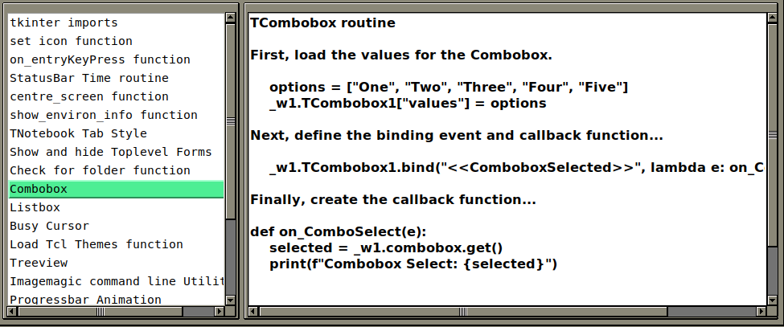
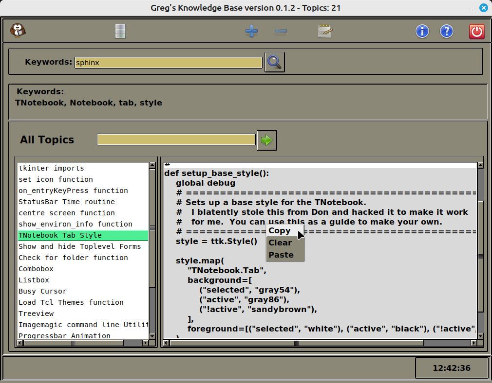
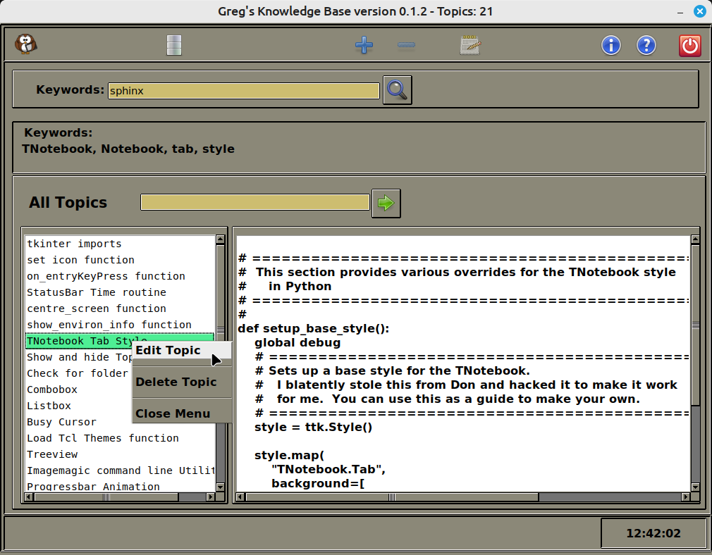
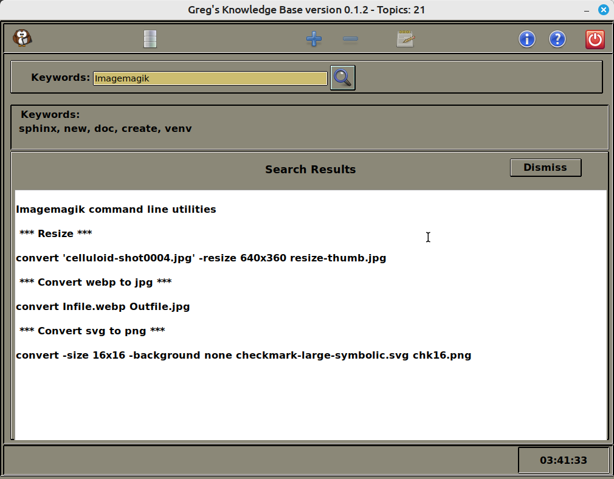
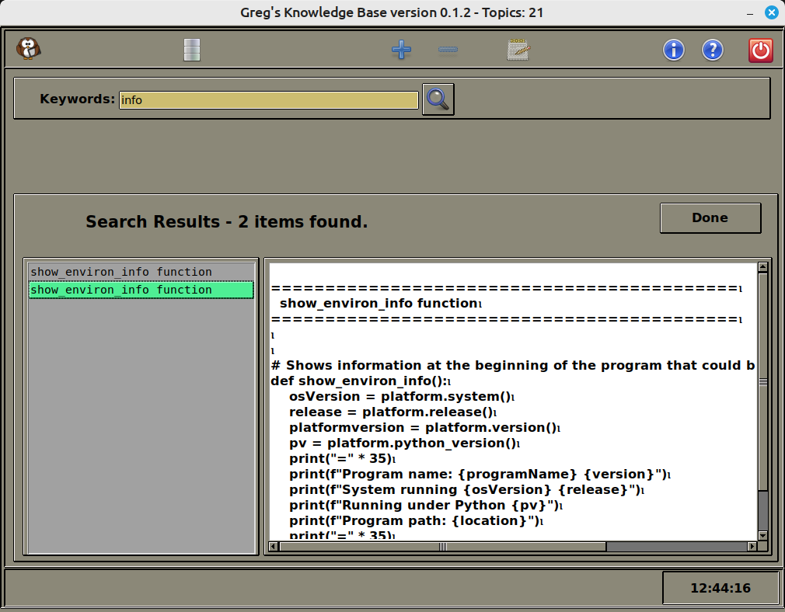
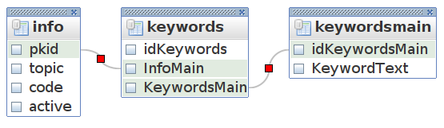

Greg’s Knowledge Base’s documentation¶

Greg’s Knowledge Base started life many years ago as a simple flat text file that I kept on my desktop, holding a few blocks of code snippets that gave me quick access to functions like setting up a TCombobox or Listbox with all the supporting goodies. Yes, I could remember most of it, but it was so easy just to go to the text file, copy the snippet and paste into my new project, changing just the things that I needed in the new code.
In late December 2023, I decided that it might be a good idea to create a database that held all of the snippets and create a PAGE GUI front-end for it. This way, I thought, I would be able to share my snippets with others and share my many years of knowledge with others. This way, my RAD (Rapid Application Development) skills would make my life easier and I can still share with others.
Note
I should take this chance to make sure you know that Greg’s Knowledge Base is currently under active development and is subject to bugs, things that are somewhat clumsy, subject to change, subject to disappearing in future versions, so please be patient.
Now that I’ve warned you, let’s get on with how to use the program.
This is ALL based on the gkb version 0.1.2 code. Again, things are subject to change.
Requirements¶
The only requirements (at this point) is that you have Python installed on your system and that it is version 3.8 or greater. I’ve currently tested gkb on multiple versions of Python from 3.8 to 3.12.0. I’ve tried not to require any third party libraries.
Installing gkb¶
Installing gkb is actually very simple. Just create a folder on your computer and unzip the distribution zip file into that folder.
Starting gkb¶
Open a terminal on your machine and type…
$ python gkb.py
You should see the main form show up somewhere near the centre of your monitor.
Using gkb¶
I’ve tried to create a GUI that is easy to understand and to navigate. However, this like most things with most of my programs, is subject to change.
We’ll start with the initial screen that you see when you start up gkb.
At the top is the button bar. Just below that is the keyword search bar. Below that is the keyword list bar, which in this image is hidden. Below that is the main “window” where most of the action happens. Finally at the bottom is a status bar that can show important information as well as the current time.
Now, let’s break down the some of these sections.
{kind=link}
The Main Screen - All Topics¶
There are two main parts to the main screen that will be used the most. The topic list box on the left of the screen and the code text box on the right.
{kind=link}
Every topic that is in the database is in the Selection list box. Simply left click on the topic of interest and the code/tips will be automatically loaded into the textbox on the right.
Clicking on any topic in the Selection list box will not only show you the code snippet associated with it, but all of the keywords that have been assigned to that topic.
To copy any part of the code snippet, simple select the section you wish to copy, right click on it and select Copy from the context menu.
{kind=link}
If you find that you want to edit the code snippet, add or delete keywords or rename the topic, you can do that from the topic selection listbox. Right click on the topic and in the context menu, select Edit.
{kind=link}
(See Editing Topics and Snippets below for more information. Editing Topics and Snippets
Searching for Topics¶
You can search for a topic by a keyword search.
Here are the steps…
In the Keyword search bar, simply enter the keyword you want to search for. For example, if you want to find anything pertaining to ‘imagemagik’, type ‘imagemagik’ into the entry box and either press the <Enter> key or click on the search button.
{kind=link}
There will be times, that you’ve created unique keywords for each topic and the search will only return one record, as shown in the above image. However, it will be unavoidable that you can always create completely unique keywords. When more than one record is found for a particular keyword search, a different search screen will be returned.
{kind=link}
Each returned record from the search is shown in the listbox on the left. Select any record by clicking on it in the list box to see the code in the right hand box.
gkb version 0.1.2 has a small error that will sometimes return multiple records when only one should be found. This will hopefully fixed in the release.
Adding your own Topics and Snippets¶
I made sure that anyone who uses gkb can easily add their own snippets that they often use to the database. Here’s how…
First, click on the “plus” sign in the buttonbar menu. This will switch to the New Topic Entry screen.
Add your topic name into the Topic Entry, then create a list of keywords, each keyword separated by commas, into the Keywords Entry.
Next, enter your code snippet into the Textbox. Make any additional comments or tips you feel might be helpful. Remember, many times, your entire entry will be copied, so make sure you use the “#” comment marker.

Once you’ve gotten everything complete, click the “Save” button. If everything saved correctly, you will see a dialog that says “Save Complete” with an “OK” button. Click the “OK” button. If you have other snippets to add, simply repeat the process.
still to be completed
Editing Topics and Snippets¶
You might want to add some helpful information to an existing snippet, change the Topic text or change some or all of the keyword set. This can easily be done using the ‘Edit Topic’ feature.
As I stated above, you can get to the ‘Edit Topic’ screen by right clicking on a topic in the Topic Selection listbox in the ‘All Topics’ screen (Click on the Database button in the Buttonbar if you aren’t there) and selecting “Edit Topic” from the context menu.
When you do that, you will be taken to the Topic Edit screen. You might say, ‘Hey, that looks like the New Topic screen!’. You are correct, I re-use the screen, but in the Topic Edit mode you any changes you make to the topic name, keywords and/or the snipped will update the database with the new information. The old information will be over-written.

Make any changes you need, the click the “Save” button, just like you did in the Adding your own Topic section.
Click the Dismiss button to get back to the All Topic Screen.
still to be completed
Deleting topics¶
This is not supported in version 0.1.2. It will be working in version 0.1.3.
Diving Deep into gkb¶
In this section, I will attempt to explain some of the things that is “normally” hidden within the code. If you don’t care about how it works, then you can feel free to skip this section. If, on the other hand, you want to understand things like using databases, database schemas, SQL statements, and so on, continue on, happy pilgrim!
Warning
In the first few releases of gkb, I am including all three PAGE files, the .tcl file that PAGE uses to generate the Python files and the Python .py files which are used to run gkb itself. Normally, I would include the .tcl file to allow a user to see how I built the GUI. Due to an issue in PAGE 8.0 with popup menus, I’m going to remove it from the distribution for a while, since if someone saves the file by accident and generates the python files from within PAGE, it will break all of the context menus. Don is planning on rebuilding the menu system in PAGE from the bottom up for PAGE 8.1, so hopefully the issues will be taken care of and I can once again include the .tcl file.
The Database¶
The database is a simple SqlLite database. I use this because it is simple, portable and fairly bulletproof.
Here is what the schema looks like…
{kind=link}
You can see that there are three tables for the database. The first is named ‘info’. This table holds the topic name, the code snippet, an active boolean flag that makes a record as deleted or active and finally but most importantly the primary key id (pkid).
The second table is named ‘keywords’ and acts as a link between the info table and the next table which is named ‘keywordsmain’. The keywords table contains only integer entries. We’ll examine this in a little bit.
Now we look at the third table, the ‘keywordsmain’ table. This table contains a primary key id and the text of each keyword that might be used to describe the topic.
still to be completed
About PAGE¶
PAGE is a drag-and-drop GUI generator for Python and Tkinter which generates Python modules that display a relatively simple GUI constructed from Tk and Ttk widget sets using the Place Geometry Manager. PAGE supports the construction of multiple Toplevel GUI’s.
PAGE is a cross-platform tool running on any OS that has a current version of Python installed. PAGE output requires only Python Tkinter and runs on Linux, Unix, Windows, OS X, and even Raspberry Pi.
Version 8 is a major release which incorporates initial support of Ttk themes.
PAGE can be found at https://sourceforge.net/projects/page/